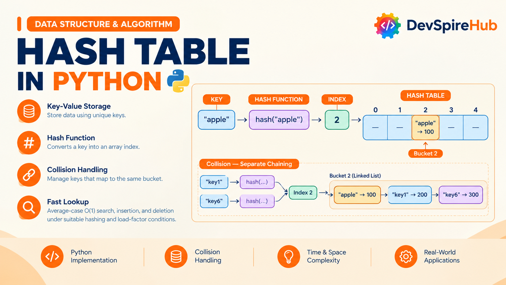

Hash Table Data Structure in Python – Complete Tutorial with Examples
A hash table is one of the most useful data structures in computer science for storing and retrieving data by a unique key. Instead of searching through every item one at a time, a hash table uses a hash function to calculate where a key belongs, making lookup, insertion, and deletion O(1) on average. In this tutorial, you'll learn how hash tables work in Python, understand collisions and load factors, build a custom hash table from scratch, and explore real-world uses such as caching, frequency counting, duplicate detection, and fast lookups.

Designed for beginners, Python developers, and candidates preparing for coding interviews, this tutorial covers:
- Core Concepts & Architecture: Learn how keys, values, hash functions, buckets, collisions, chaining, and load factors work together.
- Python Implementations: Use Python dictionaries, sets,
defaultdict, andCounter, then create a custom hash table from scratch. - Real-World Applications: Build practical solutions for word-frequency counting, caching, event deduplication, database-style indexing, and fast key-value lookups.
- Interview Prep & Patterns: Practice common hash table problems and patterns including Two Sum, Group Anagrams, sliding windows, LRU Cache, and collision handling.
Table of Contents
Introduction
1. What Is hash table?
A hash table is a key–value data structure that uses a hash function to convert a key into an array index, enabling very fast average-case lookup, insertion, and deletion typically O(1). It is different from a queue: a queue preserves arrival order (FIFO), while a hash table preserves no meaningful order and is optimized for finding values by key.
A hash table stores pairs such as:
"user123" -> {name: "Asha", role: "admin"}
"order456" -> {status: "shipped"}
To store or find a value, it computes an index from the key:
index = hash(key) mod table size
Real-World Analogy: Think of a school locker room. Every student has a name, and the locker number is calculated from that name using a simple rule for example, count the letters in the name and use the last digit. When a student wants their bag, they do not search every locker; they apply the same rule, get the locker number, and go directly to it.
How It Relates to What You Already Know
- Singly Linked List: In a hash table, each bucket can hold a small chain of entries. When two keys map to the same bucket, the new entry is simply added to that chain. The O(1) insert-at-front and O(n) search behavior you learned for singly linked lists applies directly to what happens inside one bucket.
- Stack / Queue: A stack or queue decides where to add or remove an item using a fixed position rule one end for a stack, both ends for a queue. A hash table solves a different problem: it finds the exact location of a particular key by calculating it from the key itself.
- Doubly Linked List: A hash table and doubly linked list often work together in problems such as an LRU Cache. The hash table provides fast lookup by key, while the doubly linked list makes it easy to move items around and remove the least recently used entry in constant time.
Where it's actually used
- Python's
dictandset- both are hash tables under the hood; this tutorial is effectively "what's happening when you writemy_dict[key] = value." - Database indexing - hash indexes let a database jump straight to a row instead of scanning the table.
- Caching layers (Redis, Memcached) - key-value lookups at massive scale are hash tables distributed across machines.
- Compilers and interpreters - symbol tables that map variable names to their values/types are hash tables.
- Deduplication - checking "have I seen this before?" against a large dataset is a hash table lookup, because checking a list would be O(n) per item.
2. Core Operations & Complexity
A Hash Table's operations look different from a linked list's there's no "beginning," "end," or "middle," because position doesn't matter; only the key does. The variants that do matter are: operating by key (the normal case) vs. operating by node reference (when you're already inside a bucket's chain, e.g., mid-iteration), plus the structure-specific mechanics of collision handling and resizing.
| Operation | Variant | Average Case | Worst Case | Notes |
|---|---|---|---|---|
| Insert (new key) | by key | O(1) | O(n) | Worst case only if every key collides into the same bucket |
| Insert-or-update (existing key) | by key | O(1) | O(n) | Same lookup cost as insert — if the key exists, overwrite; if not, insert |
| Insert into a bucket's chain | by node | O(1) | O(1) | Prepending to a bucket's Singly Linked List — same O(1) as any linked list prepend |
| Delete | by key | O(1) | O(n) | Must locate the bucket (O(1)) then walk its chain (worst case O(n)) |
| Delete | by node (within a chain, reference already held) | O(1)* | O(n) | O(1) only if the chain is doubly linked, or you already hold the previous node; otherwise still O(n) to find the predecessor, same limitation as a Singly Linked List |
| Search / contains | by key | O(1) | O(n) | Same shape as delete — bucket lookup is O(1), chain walk is worst case |
| Update value | by key | O(1) | O(n) | Find-then-overwrite; overwrite itself is O(1) once found |
How It Relates to What You Already Know
- Singly Linked List / Doubly Linked List: searching either is always O(n) you have no way to skip ahead. A Hash Table turns that same "find by value" operation into O(1) average case, because the hash function tells you exactly which (small) chain to search, instead of the whole structure.
- Stack / Queue: both are O(1), but only because they restrict where you can operate (one end, or both). A Hash Table gets O(1) too, but for operations anywhere, keyed by content rather than position a fundamentally different trade-off.
- Circular Singly/Doubly Linked List: those structures are still O(n) to search, same as their non-circular counterparts — circularity helps with traversal patterns, not lookup speed. A Hash Table is the first structure in this series where search genuinely stops being linear.
3. Core Operations Explained (With Examples)
Every example below is a plain standalone function, built on top of a hash table represented as a Python list of buckets, where each bucket is a chain (a small Singly Linked List).
We'll reuse the same Node idea from your Linked List tutorials, just storing a key-value pair instead of a single value:
Python
class Node:
"""A single entry in a bucket's chain — stores a key/value pair."""
def __init__(self, key, value):
self.key = key
self.value = value
self.next = None # points to the next entry in this bucket's chain
Each Node stores:
keythe lookup name, such as"Alice"valuethe data attached to that key, such as100nexta pointer to the next node in the same bucket
And a simple hash function to turn any key into a bucket index:
Python
def hash_key(key, num_buckets):
"""Convert a key into a bucket index in range [0, num_buckets)."""
# Python's built-in hash() gives a large integer; modulo compresses it
# down to a valid index — this compression step is called "hash + compress."
return hash(key) % num_buckets
3.1 Insert a new key
Conceptually: compute the bucket index, then prepend a new node to that bucket's chain (if the key isn't already there).
Before (inserting "apple": 3, with 5 buckets, "apple" hashes to bucket 2):
bucket 0: empty
bucket 1: empty
bucket 2: empty
bucket 3: empty
bucket 4: empty
After:
bucket 0: empty
bucket 1: empty
bucket 2: [apple:3] -> None
bucket 3: empty
bucket 4: empty
Isolated code:
Python
def insert(buckets, key, value):
index = hash_key(key, len(buckets))
new_node = Node(key, value)
new_node.next = buckets[index] # Point the new_node next into a buckets
buckets[index] = new_node
# Create 5 empty buckets
buckets = [None] * 5
# Insert some key-value pairs
insert(buckets, "Alice", 100)
insert(buckets, "Bob", 200)
insert(buckets, "John", 300)
insert(buckets, "Kevin", 400)
insert(buckets, "Kennedy", 500)
# Display the has table
for idx, bucket in enumerate(buckets):
print(f"Bucket {idx}")
current = bucket
while current is not None:
print(f" {current.key} -> {current.value}")
current = current.next
Step-by-Step Explanation
What This Program Does
This program implements a small hash table using separate chaining. Each bucket is the head of a singly linked list, and new entries are inserted at the front of that list.
1. The insert function
Python
def insert(buckets, key, value):
index = hash_key(key, len(buckets))
new_node = Node(key, value)
new_node.next = buckets[index]
buckets[index] = new_nodeStep-by-step:
hash_key(key, len(buckets))calculates the bucket index for the given key. The number of buckets is passed so that the result stays within valid indexes.Node(key, value)creates a new linked-list node holding the key and its value.new_node.next = buckets[index]links the new node to the current first node in that bucket. If the bucket is empty,buckets[index]isNone, sonew_node.nextbecomesNone.buckets[index] = new_nodemakes the new node the new head of that bucket’s linked list.
So the function always inserts the newest entry at the front of the bucket list. This is a common separate-chaining approach: when multiple keys hash to the same bucket, they are stored in the same linked list.
2. Creating empty buckets
Python
buckets = [None] * 5This creates an array of five empty buckets:
Bucket 0: None
Bucket 1: None
Bucket 2: None
Bucket 3: None
Bucket 4: NoneEach None means that bucket currently has no linked list.
3. Inserting values
Python
insert(buckets, "Alice", 100)
insert(buckets, "Bob", 200)
insert(buckets, "John", 300)
insert(buckets, "Kevin", 400)
insert(buckets, "Kennedy", 500)For every call:
- The key is hashed to find a bucket index.
- A node is created for the key-value pair.
- The node is linked to the existing bucket head.
- The bucket now points to the new node.
For example, if "Alice" hashes to bucket 2:
Before:
Bucket 2: NoneAfter:
Bucket 2: Alice -> 100 -> NoneIf "Kevin" later hashes to the same bucket 2:
Bucket 2: Kevin -> 400 -> Alice -> 100 -> NoneKevin appears first because it was inserted at the front.
4. Displaying the hash table
Python
for idx, bucket in enumerate(buckets):
print(f"Bucket {idx}")
current = bucket
while current is not None:
print(f" {current.key} -> {current.value}")
current = current.nextStep-by-step:
enumerate(buckets)gives both the bucket index and the head node of that bucket.print(f"Bucket {idx}")prints the bucket number.current = bucketstarts traversal at the head of that bucket’s linked list.- The
whileloop runs untilcurrentbecomesNone. - Each node’s key and value are printed.
current = current.nextmoves to the next node in the chain.
5. Example output format
The exact bucket positions depend on hash_key(), but the output will look like this:
Bucket 0
Kennedy -> 500
Bucket 1
Bucket 2
Kevin -> 400
Alice -> 100
Bucket 3
Bob -> 200
Bucket 4
John -> 300Buckets that contain None print only their bucket number because their linked list is empty.
Important note
This insert function does not check whether the same key already exists. If you insert "Alice" twice, the program will store two separate Alice nodes in the same bucket instead of updating the original value. A complete hash table usually searches the bucket first and updates the value when the key already exists.
3.2 Insert-or-update an existing key
Conceptually: walk the target bucket's chain if the key is already there, overwrite its value; otherwise, prepend a new node.
Before (updating "apple" from 3 to 7):
bucket 2: [apple:3] -> None
After:
bucket 2: [apple:7] -> None
Isolated code:
Python
def insert_or_update(buckets, key, value):
index = hash_key(key, len(buckets))
current = buckets[index]
while current is not None:
if current.key == key:
current.value = value # key found - overwrite
return
current = current.next
# key is not found
new_node = Node(key, value)
new_node.next = buckets[index]
buckets[index] = new_node
buckets = [None] * 5
insert_or_update(buckets,"Alice", 100)
insert_or_update(buckets,"Bob", 200)
insert_or_update(buckets,"Alice", 300)
insert_or_update(buckets,"Kennedy", 400)
for idx, bucket in enumerate(buckets):
print(f"Buckest {idx}")
current = bucket
while current is not None:
print(f" {current.key} -> {current.value}")
current = current.next
Step-by-Step Explanation
What This Program Does
This program implements an insert-or-update operation for a hash table that uses separate chaining. If the key already exists in its bucket, the function changes its value; otherwise, it creates a new node and inserts it at the front of that bucket’s linked list.
1. insert_or_update Explanation
Python
def insert_or_update(buckets, key, value):
index = hash_key(key, len(buckets))
current = buckets[index]hash_key(key, len(buckets))finds the bucket index for the key.current = buckets[index]starts at the first node in that bucket’s linked list.- If the bucket is empty,
currentisNone.
Python
while current is not None:
if current.key == key:
current.value = value
return
current = current.next- The loop checks every node in the bucket.
- If it finds a node whose key matches the input key, it updates that node’s value.
returnstops the function immediately, so no duplicate node is created.- If the key is not found,
currenteventually becomesNoneand the loop ends.
Python
new_node = Node(key, value)
new_node.next = buckets[index]
buckets[index] = new_node- A new node is created for the key and value.
new_node.next = buckets[index]links the new node to the previous head of the bucket.buckets[index] = new_nodemakes the new node the new head of the bucket.
This is called insert at front. It is efficient because it does not need to walk to the end of the linked list.
2. Example Execution
Python
buckets = [None] * 5
insert_or_update(buckets, "Alice", 100)
insert_or_update(buckets, "Bob", 200)
insert_or_update(buckets, "Alice", 300)
insert_or_update(buckets, "Kennedy", 400)Assume "Alice" and "Kennedy" hash to the same bucket, while "Bob" hashes to another bucket.
First call
Python
insert_or_update(buckets, "Alice", 100)- The bucket is empty.
- A node
Alice -> 100is created. - It becomes the head of its bucket.
Bucket: Alice -> 100 -> NoneSecond call
Python
insert_or_update(buckets, "Bob", 200)- "Bob" hashes to its own bucket.
- The bucket is empty.
- A node
Bob -> 200is created.
Bucket: Bob -> 200 -> NoneThird call
Python
insert_or_update(buckets, "Alice", 300)- "Alice" hashes to the same bucket as before.
- The loop finds the existing Alice node.
- Its value changes from 100 to 300.
- No new node is added.
Bucket: Alice -> 300 -> NoneFourth call
Python
insert_or_update(buckets, "Kennedy", 400)- "Kennedy" hashes to Alice’s bucket.
- The loop checks Alice, but the key does not match.
- A new node is created and placed at the front.
Bucket: Kennedy -> 400 -> Alice -> 300 -> None3. Display Loop
Python
for idx, bucket in enumerate(buckets):
print(f"Buckest {idx}")
current = bucket
while current is not None:
print(f" {current.key} -> {current.value}")
current = current.nextenumerate(buckets)gives the bucket number and its head node.current = bucketstarts traversal from the bucket head.- The
whileloop prints every node in the chain. current = current.nextmoves to the next node.- When
currentbecomesNone, the loop stops.
The output will look like this, depending on the bucket indexes produced by hash_key():
Buckest 0
Buckest 1
Bob -> 200
Buckest 2
Kennedy -> 400
Alice -> 300
Buckest 3
Buckest 4Key Difference from Plain Insert
A plain insert always adds a new node, even if the key already exists. This function first searches the bucket, so repeated keys are updated rather than duplicated. That behavior matches the usual put operation in a hash map.
3.3 Search / contains by key
Conceptually: compute the bucket index, then walk that one chain looking for a matching key.
Isolated code:
Python
def get(buckets, key):
index = hash_key(key, len(buckets))
current = buckets[index]
while current is not None:
if current.key == key:
return current.value
current = current.next
return None
def contains_key(buckets, key):
return get(buckets, key) is not None
def insert(buckets, key, value):
index = hash_key(key, len(buckets))
new_node = Node(key, value)
new_node.next = buckets[index] # Point the new_node next into a buckets
buckets[index] = new_node
# Create 5 empty buckets
buckets = [None] * 5
# Insert some key-value pairs
insert(buckets, "Alice", 100)
insert(buckets, "Bob", 200)
insert(buckets, "John", 300)
insert(buckets, "Kevin", 400)
insert(buckets, "Kennedy", 500)
print("Alice exists:", contains_key(buckets, "Alice"))
print("David exists:", contains_key(buckets, "David"))
Step-by-Step Explanation
What This Program Does
This program shows how to search for a key in a hash table built with separate chaining. get() returns the stored value for a key, while contains_key() uses get() to return True or False.
1. get() explanation
Python
def get(buckets, key):
index = hash_key(key, len(buckets))
current = buckets[index]hash_key(key, len(buckets))calculates the bucket index where the key should be stored.current = buckets[index]starts at the first node in that bucket’s linked list.- If the bucket is empty,
currentisNone.
Python
while current is not None:
if current.key == key:
return current.value
current = current.next- The loop checks each node in the bucket.
- If
current.key == key, the matching node has been found. - The function immediately returns
current.value. - If the keys do not match,
current = current.nextmoves to the next node. - If the loop ends without finding the key, the function returns
None.
In a separate-chaining hash table, each bucket holds a linked list, and a lookup scans only that bucket’s chain rather than every entry in the table.
2. contains_key() explanation
Python
def contains_key(buckets, key):
return get(buckets, key) is not None- It calls
get(buckets, key). - If
get()returns a value, the key exists, so the result isTrue. - If
get()returnsNone, the key does not exist, so the result isFalse.
For example:
Python
contains_key(buckets, "Alice")returns:
Truebecause "Alice" was inserted earlier.
Python
contains_key(buckets, "David")returns:
Falsebecause "David" was never inserted.
3. insert() explanation
Python
def insert(buckets, key, value):
index = hash_key(key, len(buckets))
new_node = Node(key, value)
new_node.next = buckets[index]
buckets[index] = new_node- The key is hashed to find its bucket index.
- A new node is created with the key and value.
new_node.next = buckets[index]links the new node to the current head of that bucket.buckets[index] = new_nodemakes the new node the new head of the bucket.
So every insertion places the newest node at the front of its bucket’s linked list.
4. Creating and filling the table
Python
buckets = [None] * 5This creates five empty buckets:
Bucket 0: None
Bucket 1: None
Bucket 2: None
Bucket 3: None
Bucket 4: NonePython
insert(buckets, "Alice", 100)
insert(buckets, "Bob", 200)
insert(buckets, "John", 300)
insert(buckets, "Kevin", 400)
insert(buckets, "Kennedy", 500)Each key is hashed to one of the five buckets. If two keys hash to the same bucket, both remain in that bucket as a linked list.
For example, if "Kevin" and "Kennedy" hash to bucket 2, the bucket may look like this:
Bucket 2: Kennedy -> 500 -> Kevin -> 400 -> NoneKennedy appears first because it was inserted after Kevin.
5. Expected output
Python
print("Alice exists:", contains_key(buckets, "Alice"))
print("David exists:", contains_key(buckets, "David"))The output is:
Alice exists: True
David exists: FalseImportant limitation
This get() returns None both when the key is missing and when a stored value is actually None. In this program, all stored values are numbers, so that is not a problem. For a more general hash table, it is better to use a separate contains_key() check before calling get().
3.4 Delete by key
Conceptually: walk the target bucket's chain, tracking the previous node, and unlink the matching node when found.
Before (deleting "apple" from bucket 2):
Before (deleting "Lemon" from bucket 2):
bucket 0: [Guava:60] -> [Grape:20] -> None
bucket 1: [Peach:40] -> None
bucket 2: [Melon:50] -> [Lemon:30] -> None
bucket 3: [Mango:10] -> None
bucket 4: empty
After:
bucket 0: [Guava:60] -> [Grape:20] -> None
bucket 1: [Peach:40] -> None
bucket 2: [Melon:50] -> None
bucket 3: [Mango:10] -> None
bucket 4: empty
Isolated code:
Python
def delete_by_key(buckets, key):
index = hash_key(key, len(buckets))
current = buckets[index] # Point to the first node in the bucket's linked list
previous = None
while current is not None:
if current.key == key:
if previous is None:
buckets[index] = current.next
else:
previous.next = current.next
return True
previous = current
current = current.next
return False
def insert(buckets, key, value):
index = hash_key(key, len(buckets))
new_node = Node(key, value)
new_node.next = buckets[index] # Point the new_node next into a bucket
buckets[index] = new_node
def print_buckets(buckets):
for idx, bucket in enumerate(buckets):
print(f"Bucket {idx}")
current = bucket
while current is not None:
print(f" {current.key} -> {current.value}")
current = current.next
# Create 5 empty buckets
buckets = [None] * 5
# Insert some key-value pairs
insert(buckets, "Mango", 10)
insert(buckets, "Grape", 20)
insert(buckets, "Lemon", 30)
insert(buckets, "Peach", 40)
insert(buckets, "Melon", 50)
insert(buckets, "Guava", 60)
print("Before deleting 'Lemon':")
print_buckets(buckets)
delete_by_key(buckets, "Lemon")
print("\nAfter deleting 'Lemon':")
print_buckets(buckets)
Step-by-Step Explanation
What This Program Does
This program implements deletion in a hash table that uses separate chaining. It finds the bucket for a key, removes the matching node from that bucket’s linked list, and prints the table before and after deletion.
1. Program structure (delete_by_key)
Python
def delete_by_key(buckets, key):
index = hash_key(key, len(buckets))
current = buckets[index]
previous = Nonehash_key(key, len(buckets))finds the bucket index for the key.current = buckets[index]points to the first node in that bucket’s linked list.previous = Nonemeans no node has been visited yet.
Python
while current is not None:
if current.key == key:- The loop checks each node in the bucket.
- If
current.key == key, the node to delete has been found.
Python
if previous is None:
buckets[index] = current.nextIf the matching node is the first node in the bucket, the bucket head is changed to the next node. This removes the first node from the chain.
Python
else:
previous.next = current.next
return TrueIf the matching node is not the first node, the previous node is linked directly to the node after the deleted node. This removes the current node from the middle or end of the chain. The function returns True because deletion succeeded.
Python
previous = current
current = current.next
return False- If the current node is not a match,
previousbecomes the current node. currentmoves to the next node.- If the loop ends without finding the key, the function returns
False.
In separate chaining, each bucket contains a linked list, and deletion removes the matching entry from that chain.
2. insert() explanation
Python
def insert(buckets, key, value):
index = hash_key(key, len(buckets))
new_node = Node(key, value)
new_node.next = buckets[index]
buckets[index] = new_node- The key is hashed to find its bucket.
- A new node is created with the key and value.
new_node.next = buckets[index]links the new node to the current bucket head.buckets[index] = new_nodemakes the new node the new head of that bucket.
So new entries are inserted at the front of the bucket’s linked list.
3. print_buckets() explanation
Python
def print_buckets(buckets):
for idx, bucket in enumerate(buckets):
print(f"Bucket {idx}")
current = bucket
while current is not None:
print(f" {current.key} -> {current.value}")
current = current.nextenumerate(buckets)gives each bucket index and its head node.current = bucketstarts at the first node in that bucket.- The
whileloop prints every key-value pair in the bucket. current = current.nextmoves to the next node.- When
currentbecomesNone, the loop stops.
4. Example execution
Python
buckets = [None] * 5
insert(buckets, "Mango", 10)
insert(buckets, "Grape", 20)
insert(buckets, "Lemon", 30)
insert(buckets, "Peach", 40)
insert(buckets, "Melon", 50)
insert(buckets, "Guava", 60)This creates five empty buckets and inserts six fruit entries. The exact bucket positions depend on hash_key().
Assume "Lemon" hashes to bucket 2, and bucket 2 contains:
Before deleting "Lemon":
Bucket 2: [30] -> [10] -> NoneDeleting "Lemon"
Python
delete_by_key(buckets, "Lemon")Step-by-step:
- "Lemon" hashes to bucket 2.
currentpoints to the first node,Lemon -> 30.previousisNone.- The first comparison finds
current.key == "Lemon". - Since
previousisNone, the program runs:buckets[index] = current.next. - Bucket 2 now points to
Mango -> 10. - The Lemon node is removed from the chain.
- The function returns
True.
After deleting "Lemon":
Bucket 2: [10] -> None5. Expected output format
The exact output depends on the hash function, but it will look like this:
Before deleting 'Lemon':
Bucket 0
Bucket 1
Peach -> 40
Bucket 2
Lemon -> 30
Mango -> 10
Bucket 3
Grape -> 20
Melon -> 50
Bucket 4
Guava -> 60
After deleting 'Lemon':
Bucket 0
Bucket 1
Peach -> 40
Bucket 2
Mango -> 10
Bucket 3
Grape -> 20
Melon -> 50
Bucket 4
Guava -> 606. Deletion cases
| Case | What happens |
|---|---|
| Key is the first node | buckets[index] is updated to current.next |
| Key is in the middle | previous.next is updated to current.next |
| Key is the last node | previous.next becomes None |
| Key is not found | The loop reaches None and returns False |
The time taken depends on the number of nodes in the target bucket. With a good hash function and reasonably short chains, deletion is efficient on average.
3.5 Delete by node reference (already inside a chain)
Conceptually: sometimes you're already iterating a bucket's chain (for example, during a resize) and hold a direct reference to the node you want removed but a Singly Linked chain still has no prev pointer, so you can't unlink it in O(1) without also tracking the predecessor yourself.
Before (deleting "Koala" from bucket 3):
bucket 0: [Zebra:22] -> None
bucket 1: [Otter:66] -> None
bucket 2: [Whale:77] -> [Tiger:11] -> None
bucket 3: [Eagle:55] -> [Koala:44] -> None
bucket 4: [Panda:33] -> None
After:
bucket 0: [Zebra:22] -> None
bucket 1: [Otter:66] -> None
bucket 2: [Whale:77] -> [Tiger:11] -> None
bucket 3: [Eagle:55] -> None
bucket 4: [Panda:33] -> None
Isolated code:
Python
def delete_node_with_predecessor(buckets, index, target_node, previous_node):
if previous_node is None:
buckets[index] = target_node.next # target is the head of the chain
else:
previous_node.next = target_node.next # bypass the target node
def insert(buckets, key, value):
index = hash_key(key, len(buckets))
new_node = Node(key, value)
new_node.next = buckets[index] # Point the new_node next into a bucket
buckets[index] = new_node
def print_buckets(buckets):
for idx, bucket in enumerate(buckets):
print(f"Bucket {idx}")
current = bucket
while current is not None:
print(f" {current.key} -> {current.value}")
current = current.next
# Create 5 empty buckets
buckets = [None] * 5
# Insert some key-value pairs
insert(buckets, "Tiger", 11)
insert(buckets, "Zebra", 22)
insert(buckets, "Panda", 33)
insert(buckets, "Koala", 44)
insert(buckets, "Eagle", 55)
insert(buckets, "Otter", 66)
insert(buckets, "Whale", 77)
print("Before deleting 'Koala':")
print_buckets(buckets)
# Delete Koala
key = "Koala"
index = hash_key(key, len(buckets))
current = buckets[index]
previous = None
while current is not None:
if current.key == key:
delete_node_with_predecessor(buckets, index, current, previous)
break
previous = current
current = current.next
print("\nAfter deleting 'Koala':")
print_buckets(buckets)
Step-by-Step Explanation
What This Program Does
This program separates the search for a key from the actual deletion. Once the target node and its predecessor are found, delete_node_with_predecessor() removes the node by changing only the necessary links.
1. delete_node_with_predecessor() explanation
Python
def delete_node_with_predecessor(buckets, index, target_node, previous_node):
if previous_node is None:
buckets[index] = target_node.nexttarget_nodeis the node to delete.previous_nodeis the node immediately before it in the same bucket.- If
previous_nodeisNone, the target node is the first node in the bucket. - Therefore, the bucket itself must point to the node after the target:
buckets[index] = target_node.next. - This removes the head node from the bucket’s linked list.
Python
else:
previous_node.next = target_node.next- If the target node is not the first node, the previous node must skip over it.
previous_node.next = target_node.nextlinks the previous node directly to the node after the target.- The target node is no longer part of the chain.
For a singly linked list, deletion needs the predecessor because the predecessor’s next pointer must be updated.
2. insert() explanation
Python
def insert(buckets, key, value):
index = hash_key(key, len(buckets))
new_node = Node(key, value)
new_node.next = buckets[index]
buckets[index] = new_node- The key is hashed to find its bucket index.
- A new node is created with the key and value.
new_node.next = buckets[index]links the new node to the current first node in the bucket.buckets[index] = new_nodemakes the new node the new head of that bucket.
So every new entry is inserted at the front of its bucket’s linked list.
3. print_buckets() explanation
Python
def print_buckets(buckets):
for idx, bucket in enumerate(buckets):
print(f"Bucket {idx}")
current = bucket
while current is not None:
print(f" {current.key} -> {current.value}")
current = current.nextenumerate(buckets)provides the bucket number and the head node.current = bucketstarts at the first node in that bucket.- The while loop prints each key-value pair.
current = current.nextmoves to the next node.- The loop stops when
currentbecomesNone.
4. Creating and filling the table
Python
buckets = [None] * 5
insert(buckets, "Tiger", 11)
insert(buckets, "Zebra", 22)
insert(buckets, "Panda", 33)
insert(buckets, "Koala", 44)
insert(buckets, "Eagle", 55)
insert(buckets, "Otter", 66)
insert(buckets, "Whale", 77)This creates five empty buckets. Each animal key is hashed to one of the five buckets. If several keys hash to the same bucket, they are stored as a linked list in that bucket.
5. Deleting "Koala"
Python
key = "Koala"
index = hash_key(key, len(buckets))
current = buckets[index]
previous = None- "Koala" is hashed to find its bucket.
currentstarts at the first node in that bucket.previousstarts asNone.
Python
while current is not None:
if current.key == key:
delete_node_with_predecessor(buckets, index, current, previous)
break
previous = current
current = current.next- The loop searches for the node containing "Koala".
- When it is found,
currentis the target node andpreviousis its predecessor. delete_node_with_predecessor()removes the target node.breakstops the loop because the deletion is complete.- If the current node is not "Koala",
previousmoves tocurrent, andcurrentmoves to the next node.
Example
Assume bucket 2 contains:
Before deleting "Koala":
Bucket 2: [44] -> [33] -> NoneHere:
target_node= Koala nodeprevious_node= None
Because previous_node is None, the program runs:
Python
buckets[index] = target_node.nextSo bucket 2 now points to the Panda node:
After deleting "Koala":
Bucket 2: [33] -> NoneIf "Koala" were in the middle of the chain, the previous node would instead be updated:
Python
previous_node.next = target_node.nextThat bypasses the Koala node and keeps the rest of the chain connected.
6. Expected output format
The exact bucket positions depend on hash_key(), but the output will look like this:
Before deleting 'Koala':
Bucket 0
Bucket 1
Zebra -> 22
Bucket 2
Koala -> 44
Panda -> 33
Bucket 3
Tiger -> 11
Eagle -> 55
Bucket 4
Otter -> 66
Whale -> 77
After deleting 'Koala':
Bucket 0
Bucket 1
Zebra -> 22
Bucket 2
Panda -> 33
Bucket 3
Tiger -> 11
Eagle -> 55
Bucket 4
Otter -> 66
Whale -> 777. Why the predecessor matters
| Target position | previous_node | Link changed |
|---|---|---|
| First node | None | buckets[index] = target_node.next |
| Middle node | Node before target | previous_node.next = target_node.next |
| Last node | Node before target | previous_node.next = None |
Once the target and predecessor are known, deletion itself takes constant time because only one pointer needs to change.
3.6 Update value by key
Before (updating "Tiger" in bucket 2):
bucket 0: [Zebra:22] -> None
bucket 1: [Otter:66] -> None
bucket 2: [Whale:77] -> [Tiger:11] -> None
bucket 3: [Eagle:55] -> [Koala:44] -> None
bucket 4: [Panda:33] -> None
After:
bucket 0: [Zebra:22] -> None
bucket 1: [Otter:66] -> None
bucket 2: [Whale:77] -> [Tiger:99] -> None
bucket 3: [Eagle:55] -> [Koala:44] -> None
bucket 4: [Panda:33] -> None
Isolated code:
Python
def update_value(buckets, key, new_value):
index = hash_key(key, len(buckets))
current = buckets[index]
while current is not None:
if current.key == key:
current.value = new_value
return True
current = current.next
return False
def insert(buckets, key, value):
index = hash_key(key, len(buckets))
new_node = Node(key, value)
new_node.next = buckets[index] # Point the new_node next into a bucket
buckets[index] = new_node
def print_buckets(buckets):
for idx, bucket in enumerate(buckets):
print(f"Bucket {idx}")
current = bucket
while current is not None:
print(f" {current.key} -> {current.value}")
current = current.next
# Create 5 empty buckets
buckets = [None] * 5
# Insert some key-value pairs
insert(buckets, "Tiger", 11)
insert(buckets, "Zebra", 22)
insert(buckets, "Panda", 33)
insert(buckets, "Koala", 44)
insert(buckets, "Eagle", 55)
insert(buckets, "Otter", 66)
insert(buckets, "Whale", 77)
print("Before updating 'Tiger':")
print_buckets(buckets)
print("\nupdate_value('Tiger', 99):", update_value(buckets, "Tiger", 99))
print("update_value('Lion', 1): ", update_value(buckets, "Lion", 1))
print("\nAfter updating 'Tiger':")
print_buckets(buckets)
Step-by-Step Explanation
What This Program Does
This program updates the value of an existing key in a hash table that uses separate chaining. It searches only the bucket where the key should be stored, changes the value if the key is found, and returns True; otherwise, it returns False.
1. update_value() explanation
Python
def update_value(buckets, key, new_value):
index = hash_key(key, len(buckets))
current = buckets[index]hash_key(key, len(buckets))calculates the bucket index for the key.current = buckets[index]starts at the first node in that bucket’s linked list.- If the bucket is empty,
currentisNone.
Python
while current is not None:
if current.key == key:
current.value = new_value
return True
current = current.next
return False- The loop checks each node in the bucket.
- If
current.key == key, the matching node has been found. current.value = new_valuereplaces the old value with the new value.return Trueimmediately ends the function because the update succeeded.- If the key does not match,
current = current.nextmoves to the next node. - If the loop reaches the end without finding the key, the function returns
False.
In separate chaining, a lookup first hashes the key to locate its bucket and then walks that bucket’s linked list to compare keys.
2. insert() explanation
Python
def insert(buckets, key, value):
index = hash_key(key, len(buckets))
new_node = Node(key, value)
new_node.next = buckets[index]
buckets[index] = new_node- The key is hashed to find its bucket index.
- A new node is created with the key and value.
new_node.next = buckets[index]links the new node to the current head of the bucket.buckets[index] = new_nodemakes the new node the new head of that bucket.
So each new entry is inserted at the front of its bucket’s linked list.
3. print_buckets() explanation
Python
def print_buckets(buckets):
for idx, bucket in enumerate(buckets):
print(f"Bucket {idx}")
current = bucket
while current is not None:
print(f" {current.key} -> {current.value}")
current = current.nextenumerate(buckets)gives each bucket index and its head node.current = bucketstarts at the first node in that bucket.- The while loop prints every key-value pair in the bucket.
current = current.nextmoves to the next node.- When
currentbecomesNone, the loop stops.
4. Creating and filling the table
Python
buckets = [None] * 5
insert(buckets, "Tiger", 11)
insert(buckets, "Zebra", 22)
insert(buckets, "Panda", 33)
insert(buckets, "Koala", 44)
insert(buckets, "Eagle", 55)
insert(buckets, "Otter", 66)
insert(buckets, "Whale", 77)Each animal key is hashed to one of the five buckets. If multiple keys hash to the same bucket, they are stored in the same linked list.
5. Updating "Tiger"
Python
print("\nupdate_value('Tiger', 99):", update_value(buckets, "Tiger", 99))Step-by-step:
- "Tiger" is hashed to find its bucket.
- The loop searches that bucket’s linked list.
- When the node with key "Tiger" is found, its value changes from 11 to 99.
- The function returns
True.
Before:
Tiger -> 11After:
Tiger -> 996. Trying to update "Lion"
Python
print("update_value('Lion', 1): ", update_value(buckets, "Lion", 1))- "Lion" is hashed to find its bucket.
- The loop checks every node in that bucket.
- No node has the key "Lion".
- The loop ends, and the function returns
False. - No value is changed and no new node is inserted.
7. Expected output format
The exact bucket positions depend on hash_key(), but the output will look like this:
Before updating 'Tiger':
Bucket 0
Bucket 1
Zebra -> 22
Bucket 2
Tiger -> 11
Panda -> 33
Bucket 3
Eagle -> 55
Bucket 4
Koala -> 44
Otter -> 66
Whale -> 77
update_value('Tiger', 99): True
update_value('Lion', 1): False
After updating 'Tiger':
Bucket 0
Bucket 1
Zebra -> 22
Bucket 2
Tiger -> 99
Panda -> 33
Bucket 3
Eagle -> 55
Bucket 4
Koala -> 44
Otter -> 66
Whale -> 778. Result cases
| Key status | Function result | Action |
|---|---|---|
| Key exists | True |
Existing value is replaced |
| Key does not exist | False |
No change is made |
| Bucket is empty | False |
No node is available to update |
The update operation follows the same two-step pattern as lookup: hash the key to find the bucket, then search that bucket’s chain for the matching key.
4. Implementation
Method A: Using the built-in structure
Python's dict is a production-grade hash table using it directly is almost always the right call in real code:
Python
phonebook = {}
phonebook["Alice"] = "555-0100"
phonebook["Bob"] = "555=0142"
print(phonebook.get("Alice"))
print("Charlie" in phonebook)
del phonebook["Bob"]
print(phonebook.get("Bob"))
Step-by-Step Explanation
What This Program Does
This program uses a Python dictionary as a simple phonebook. It adds contacts, looks up a number, checks whether a contact exists, deletes a contact, and safely checks for a deleted contact.
1. Create an empty dictionary
Python
phonebook = {}{}creates an empty dictionary.- A dictionary stores data as key: value pairs.
- Here, each person’s name is the key, and their phone number is the value.
At this point:
phonebook = {}2. Add Alice
Python
phonebook["Alice"] = "555-0100""Alice"is the key."555-0100"is the value.- This adds a new entry to the dictionary.
Now:
phonebook = {
"Alice": "555-0100"
}3. Add Bob
Python
phonebook["Bob"] = "555=0142""Bob"is the key."555=0142"is the value.- Note: this value contains
=instead of the usual-in a phone number, but Python treats it as an ordinary string.
Now:
phonebook = {
"Alice": "555-0100",
"Bob": "555=0142"
}Dictionaries store unique keys; assigning a value to an existing key replaces its old value.
4. Get Alice’s phone number
Python
print(phonebook.get("Alice"))phonebook.get("Alice")looks up the key"Alice".- The key exists, so it returns
"555-0100". print()displays that value.
Output:
555-0100.get() is safer than phonebook["Alice"] because it returns None instead of raising a KeyError when a key is missing.
5. Check whether Charlie exists
Python
print("Charlie" in phonebook)- The
inoperator checks whether"Charlie"is a key in the dictionary. "Charlie"was never added, so the result isFalse.
Output:
FalseThe in keyword checks for the presence of a key in a dictionary.
6. Delete Bob
Python
del phonebook["Bob"]delremoves the key-value pair for"Bob".- After this line, Bob is no longer in the phonebook.
Now:
phonebook = {
"Alice": "555-0100"
}del dictionary[key] deletes the entire key-value pair.
7. Try to get Bob’s number
Python
print(phonebook.get("Bob"))- "Bob" was deleted in the previous step.
phonebook.get("Bob")does not find the key.- Because
.get()is used, it returnsNoneinstead of causing an error.
Output:
NoneFinal output
555-0100
False
NoneImportant note
If you used square brackets instead of .get():
Python
print(phonebook["Bob"])Python would raise a KeyError because "Bob" no longer exists. Using .get() avoids that error and returns None by default.
Method B: Using the collections module
collections.defaultdict removes the "check if key exists before inserting" boilerplate handy for the frequency-counting and grouping patterns you'll see in Section 5:
Python
from collections import defaultdict
word_counts = defaultdict(int)
for word in ["apple", "banana", "apple", "cherry", "apple"]:
word_counts[word] += 1
print(dict(word_counts))
Step-by-Step Explanation
What this Program Does
This program counts how many times each word appears in a list using defaultdict.
Python
from collections import defaultdict
word_counts = defaultdict(int)
for word in ["apple", "banana", "apple", "cherry", "apple"]:
word_counts[word] += 1
print(dict(word_counts))Output:
{'apple': 3, 'banana': 1, 'cherry': 1}1. Import defaultdict
Python
from collections import defaultdictdefaultdict is a special type of dictionary. When you access a key that does not exist, it automatically creates a default value instead of raising a KeyError.
2. Create an empty counting dictionary
Python
word_counts = defaultdict(int)Here, int is the default factory. When a missing key is accessed, defaultdict(int) creates the default value:
Python
int()which is:
0So every new word starts with a count of 0.
3. Loop through the words
Python
for word in ["apple", "banana", "apple", "cherry", "apple"]:The loop visits each word one by one:
applebananaapplecherryapple
4. Increase the count
Python
word_counts[word] += 1This line does two things:
- If the word is not in
word_counts, create it with value 0 - Add 1 to its count
For example:
Python
word_counts["apple"] += 1first becomes:
Python
word_counts["apple"] = 0then becomes:
Python
word_counts["apple"] = 1How the Dictionary Changes
| Word | Action | word_counts after update |
|---|---|---|
| apple | New key created, then increased to 1 | {'apple': 1} |
| banana | New key created, then increased to 1 | {'apple': 1, 'banana': 1} |
| apple | Existing count increased | {'apple': 2, 'banana': 1} |
| cherry | New key created, then increased to 1 | {'apple': 2, 'banana': 1, 'cherry': 1} |
| apple | Existing count increased | {'apple': 3, 'banana': 1, 'cherry': 1} |
Convert to a Normal Dictionary
Python
print(dict(word_counts))dict(word_counts) converts the defaultdict into a regular dictionary before printing.
Final result:
{'apple': 3, 'banana': 1, 'cherry': 1}Why Use defaultdict?
Without defaultdict, you would need to check whether the word already exists:
Python
word_counts = {}
for word in ["apple", "banana", "apple", "cherry", "apple"]:
if word not in word_counts:
word_counts[word] = 0
word_counts[word] += 1With defaultdict, this check is handled automatically:
Python
word_counts[word] += 1This makes frequency counting shorter and easier to read.
Method 3: From scratch - the full custom class
This is where the class-based version lives, with every operation from Section 2/3 available as a method, using chaining with Singly Linked Lists as buckets:
Python
class HashTable:
"""A from-scratch Hash Table using chaining (array of Singly Linked Lists)."""
class _Node:
def __init__(self, key, value):
self.key = key
self.value = value
self.next = None
def __init__(self, initial_buckets=8):
self.buckets = [None] * initial_buckets
self.size = 0 # number of key-value pairs currently stored
def _hash(self, key):
return hash(key) % len(self.buckets)
def put(self, key, value):
"""Insert a new key, or update the value if the key already exists."""
index = self._hash(key)
current = self.buckets[index]
while current is not None:
if current.key == key:
current.value = value
return
current = current.next
new_node = self._Node(key, value)
new_node.next = self.buckets[index]
self.buckets[index] = new_node
self.size += 1
# Resize when the table gets too full (average chain length > 0.75)
if self.size / len(self.buckets) > 0.75:
self._resize()
def get(self, key):
index = self._hash(key)
current = self.buckets[index]
while current is not None:
if current.key == key:
return current.value
current = current.next
return None
def contains(self, key):
return self.get(key) is not None
def delete(self, key):
index = self._hash(key)
current = self.buckets[index]
previous = None
while current is not None:
if current.key == key:
if previous is None:
self.buckets[index] = current.next
else:
previous.next = current.next
self.size -= 1
return True
previous = current
current = current.next
return False
def _resize(self):
"""Double the bucket count and reinsert every key — every key's bucket
index can change because the modulo divisor (len(self.buckets)) changed."""
old_buckets = self.buckets
self.buckets = [None] * (len(old_buckets) * 2)
self.size = 0
for head in old_buckets:
current = head
while current is not None:
self.put(current.key, current.value) # rehash into the new table
current = current.next
def __len__(self):
return self.size
def keys(self):
"""Helper for iteration/testing — collects all keys."""
result = []
for head in self.buckets:
current = head
while current is not None:
result.append(current.key)
current = current.next
return result
Step-by-Step Explanation
What This Program Does
This program creates a custom hash table from scratch using separate chaining. Each bucket stores a singly linked list of key-value pairs, and the table automatically grows when it becomes too full.
Python
class HashTable:
"""A from-scratch Hash Table using chaining (array of Singly Linked Lists)."""1. Node Class
Python
class _Node:
def __init__(self, key, value):
self.key = key
self.value = value
self.next = None_Node represents one entry inside a bucket. It stores:
key: the unique identifier, such as "Alice"value: the data linked to that key, such as 100next: a reference to the next node in the same bucket
Example: Node("Alice", 100) is stored as:
key: "Alice"
value: 100
next: None2. Create the Hash Table
Python
def __init__(self, initial_buckets=8):
self.buckets = [None] * initial_buckets
self.size = 0When a new HashTable is created, it starts with 8 empty buckets:
Python
table = HashTable()Internally:
buckets: [None, None, None, None, None, None, None, None]
size: 0self.bucketsholds the bucket arrayself.sizecounts how many key-value pairs are stored
3. Convert a Key to a Bucket Index
Python
def _hash(self, key):
return hash(key) % len(self.buckets)This method decides which bucket a key belongs to. For example, hash("Alice") % 8 might return 3, so "Alice" is stored in buckets[3]. The % operator keeps the index within the valid bucket range.
4. Insert or Update a Key
Python
def put(self, key, value):put() adds a new key-value pair or updates the value if the key already exists.
Find the bucket
Python
index = self._hash(key)
current = self.buckets[index]The key is converted into a bucket index, then current starts at the first node in that bucket.
Search the bucket chain
Python
while current is not None:
if current.key == key:
current.value = value
return
current = current.nextIf the key already exists, its old value is replaced:
Python
table.put("Alice", 100)
table.put("Alice", 500)After both calls:
Alice -> 500No new node is added.
Insert a new node
Python
new_node = self._Node(key, value)
new_node.next = self.buckets[index]
self.buckets[index] = new_node
self.size += 1If the key is not found, a new node is created and placed at the front of the bucket. For example, if bucket 3 already contains John -> 300 and you insert table.put("Alice", 100), the bucket becomes:
Alice -> 100 -> John -> 300This is called prepending, and it takes constant time.
5. Resize When Needed
Python
if self.size / len(self.buckets) > 0.75:
self._resize()The load factor is:
load factor = number of stored items / number of bucketsIf more than 75% of the bucket capacity is used, the table resizes.
Example: 6 items / 8 buckets = 0.75. At 7 items: 7 / 8 = 0.875, so _resize() runs.
6. Get a Value by Key
Python
def get(self, key):
index = self._hash(key)
current = self.buckets[index]
while current is not None:
if current.key == key:
return current.value
current = current.next
return Noneget() finds the value linked to a key. It first finds the correct bucket, then walks through the chain.
Example:
Python
table.put("Alice", 100)
print(table.get("Alice"))Output:
100If the key does not exist, it returns None.
7. Check Whether a Key Exists
Python
def contains(self, key):
return self.get(key) is not NoneThis returns True if the key exists and False if it does not.
Example:
Python
table.put("Bob", 200)
print(table.contains("Bob")) # True
print(table.contains("David")) # False8. Delete a Key
Python
def delete(self, key):delete() removes a key-value pair from the hash table.
Find the bucket
Python
index = self._hash(key)
current = self.buckets[index]
previous = Nonecurrentpoints to the node being checkedpreviousremembers the node beforecurrent
Search for the key
Python
while current is not None:
if current.key == key:When the key is found, the node is removed from the chain.
Remove the first node
Python
if previous is None:
self.buckets[index] = current.nextIf the matching node is the first node in the bucket, the bucket head moves to the next node.
Before:
Alice -> JohnAfter deleting Alice:
JohnRemove a middle or last node
Python
else:
previous.next = current.nextIf the node is not first, the previous node skips over it.
Before:
Alice -> John -> KevinAfter deleting John:
Alice -> KevinUpdate the size
Python
self.size -= 1
return True
previous = current
current = current.next
return FalseIf the key was deleted, True is returned. If the loop finishes without finding the key, return False is executed.
9. Resize the Hash Table
Python
def _resize(self):
old_buckets = self.buckets
self.buckets = [None] * (len(old_buckets) * 2)
self.size = 0
for head in old_buckets:
current = head
while current is not None:
self.put(current.key, current.value)
current = current.next_resize() doubles the number of buckets and moves every existing entry into the new table.
- Save old buckets:
old_buckets = self.buckets - Create larger bucket array:
self.buckets = [None] * (len(old_buckets) * 2). If the old table had 8 buckets, the new table has 16. - Reinsert every entry: Every key is hashed again because the number of buckets changed. A key stored at bucket 3 in an 8-bucket table may move to a different bucket in a 16-bucket table.
10. Return the Number of Items
Python
def __len__(self):
return self.sizeThis lets you use Python’s built-in len() function:
Python
table.put("Alice", 100)
table.put("Bob", 200)
print(len(table))Output:
211. Collect All Keys
Python
def keys(self):
result = []
for head in self.buckets:
current = head
while current is not None:
result.append(current.key)
current = current.next
return resultkeys() visits every bucket, walks through each chain, and adds every key to a list.
Example:
Python
table.put("Alice", 100)
table.put("Bob", 200)
print(table.keys())Possible output:
['Bob', 'Alice']The order can vary because keys are placed into buckets based on their hash values.
Example Usage
Python
table = HashTable()
table.put("Alice", 100)
table.put("Bob", 200)
table.put("John", 300)
print(table.get("Alice")) # 100
print(table.contains("Bob")) # True
table.put("Alice", 500)
print(table.get("Alice")) # 500
table.delete("Bob")
print(table.contains("Bob")) # False
print(len(table)) # 2
print(table.keys()) # ['John', 'Alice'] or another orderTime Complexity
| Operation | Average Case | Worst Case |
|---|---|---|
| Insert / update | O(1) | O(n) |
| Search | O(1) | O(n) |
| Delete | O(1) | O(n) |
| Resize | O(n) | O(n) |
The worst case happens when many keys collide and land in the same bucket, making one linked list very long.
5. Real-World Practical Problems
Problem 1: Word frequency counter (log analysis)
Use case: counting how often each error code appears in a server log, to spot the most common failure.
Python
def count_occurrences(items):
"""Count how many times each item appears. O(n) total, O(1) average per lookup."""
counts = {}
for item in items:
counts[item] = counts.get(item, 0) + 1 # get() with a default avoids a KeyError check
return counts
log_codes = ["404", "500", "404", "200", "500", "500"]
print(count_occurrences(log_codes)) # {'404': 2, '500': 3, '200': 1}
Step-by-Step Explanation
What This Program Does
This program counts how many times each item appears in a list using a dictionary as a hash table.
Output:
{'404': 2, '500': 3, '200': 1}1. Define the Function
Python
def count_occurrences(items):count_occurrences() accepts a list called items. In this example, the list contains HTTP status codes:
["404", "500", "404", "200", "500", "500"]2. Create an Empty Dictionary
Python
counts = {}The dictionary stores each unique item as a key and its occurrence count as the value. At the beginning:
counts = {}3. Loop Through Each Item
Python
for item in items:The loop visits each item one by one:
404500404200500500
4. Get the Current Count
Python
counts.get(item, 0)get() looks for item in the dictionary:
- If the item exists, it returns its current count
- If the item does not exist, it returns the default value
0
For example, counts.get("404", 0) returns 0 the first time because "404" has not been seen yet.
5. Increase the Count
Python
counts[item] = counts.get(item, 0) + 1This line adds 1 to the item’s count.
If the item is new:
counts["404"] = 0 + 1
counts["404"] = 1If the item already exists:
counts["404"] = 1 + 1
counts["404"] = 2How the Dictionary Changes
| Item | Before Update | Calculation | After Update |
|---|---|---|---|
| "404" | Not present | 0 + 1 | {'404': 1} |
| "500" | Not present | 0 + 1 | {'404': 1, '500': 1} |
| "404" | 1 | 1 + 1 | {'404': 2, '500': 1} |
| "200" | Not present | 0 + 1 | {'404': 2, '500': 1, '200': 1} |
| "500" | 1 | 1 + 1 | {'404': 2, '500': 2, '200': 1} |
| "500" | 2 | 2 + 1 | {'404': 2, '500': 3, '200': 1} |
Final Result
Python
print(count_occurrences(log_codes))prints:
{'404': 2, '500': 3, '200': 1}This means:
- Status code 404 appeared 2 times
- Status code 500 appeared 3 times
- Status code 200 appeared 1 time
Why Use get()?
Without get(), you would need to check whether the key exists first:
Python
if item not in counts:
counts[item] = 0
counts[item] += 1Using get() combines both steps into one line:
Python
counts[item] = counts.get(item, 0) + 1Time Complexity
| Operation | Time Complexity |
|---|---|
| Visit each item once | O(n) |
| Dictionary lookup | O(1) average |
| Dictionary insert or update | O(1) average |
| Total counting process | O(n) |
The program is efficient because it makes only one pass through the list and uses constant-time dictionary operations for each item.
Problem 2: Deduplicating a stream of events
Use case: an event pipeline receiving the same event twice (due to network retries) you need to process each event exactly once.
Python
def filter_duplicates(event_ids):
"""Return only the first occurrence of each event ID, preserving order."""
seen = set() # a set is a hash table that only stores keys, no values
unique_events = []
for event_id in event_ids:
if event_id not in seen:
seen.add(event_id)
unique_events.append(event_id)
return unique_events
Step-by-Step Explanation
What This Program Does
This program removes duplicate event IDs while keeping only the first occurrence of each one, in the original order.
Example Usage
Python
event_ids = ["E101", "E102", "E101", "E103", "E102", "E104"]
print(filter_duplicates(event_ids))Output:
['E101', 'E102', 'E103', 'E104']1. Define the Function
Python
def filter_duplicates(event_ids):The function accepts a list of event IDs. Example input:
["E101", "E102", "E101", "E103", "E102", "E104"]2. Create a Set for Seen IDs
Python
seen = set()seen stores event IDs that have already appeared. A set is useful here because checking whether an item exists in it takes O(1) time on average.
At the start:
seen = set()3. Create a List for Unique IDs
Python
unique_events = []This list stores the final result: one copy of each event ID, in the order they first appeared. At the start:
unique_events = []4. Check Each Event ID
Python
for event_id in event_ids:The loop processes each event ID one at a time:
E101E102E101E103E102E104
5. Check Whether the ID Was Seen Before
Python
if event_id not in seen:This condition checks whether the current event ID is already stored in the seen set:
- If it is not in
seen, it is new - If it is already in
seen, it is a duplicate
6. Store New IDs
Python
seen.add(event_id)
unique_events.append(event_id)When a new event ID is found:
- It is added to
seen, so future duplicates can be detected - It is added to
unique_events, so it appears in the final result
How the Program Works
| Event ID | Already in seen? | Action | seen After | unique_events After |
|---|---|---|---|---|
| E101 | No | Add it | {E101} |
['E101'] |
| E102 | No | Add it | {E101, E102} |
['E101', 'E102'] |
| E101 | Yes | Skip it | {E101, E102} |
['E101', 'E102'] |
| E103 | No | Add it | {E101, E102, E103} |
['E101', 'E102', 'E103'] |
| E102 | Yes | Skip it | {E101, E102, E103} |
['E101', 'E102', 'E103'] |
| E104 | No | Add it | {E101, E102, E103, E104} |
['E101', 'E102', 'E103', 'E104'] |
Final Result
Python
return unique_eventsreturns:
['E101', 'E102', 'E103', 'E104']The duplicate IDs E101 and E102 appear only once because only their first occurrences were added.
Why Use a Set?
A set provides fast membership checking:
Python
event_id not in seenIf you used a list instead:
Python
if event_id not in unique_events:Python would search the entire list for every new event ID, making the operation slower for large inputs.
Time Complexity
| Operation | Time Complexity |
|---|---|
| Check membership in a set | O(1) average |
| Add an item to a set | O(1) average |
| Append an item to a list | O(1) average |
| Process all event IDs | O(n) |
The function makes one pass through the input list, so its overall average time complexity is O(n).
Problem 3: Undo history with instant lookup - combining Hash Table with Stack
Use case: a text editor's undo stack, where you also want to instantly check "has this exact document state been seen before?" without scanning the whole undo history.
Python
class UndoHistory:
"""A Stack for undo order, paired with a Hash Table (set) for instant duplicate checks."""
def __init__(self):
self.stack = [] # same Stack behavior from the Stack tutorial
self.seen_states = set() # O(1) average "have we seen this state?" check
def push_state(self, state):
if state in self.seen_states:
return False # don't push a state we've already recorded
self.stack.append(state)
self.seen_states.add(state)
return True
def undo(self):
if not self.stack:
return None
state = self.stack.pop()
self.seen_states.discard(state)
return state
Step-by-Step Explanation
What This Program Does
This program combines a stack and a set to create an undo history that prevents the same state from being saved twice.
How It Works
The class uses two data structures:
| Data Structure | Variable | Purpose |
|---|---|---|
| Stack | self.stack |
Stores states in undo order |
| Set | self.seen_states |
Quickly checks whether a state already exists |
The stack follows the LIFO rule: Last In, First Out. The most recently saved state is removed first during undo.
1. Initialize the Undo History
Python
def __init__(self):
self.stack = []
self.seen_states = set()When a new UndoHistory object is created:
Python
history = UndoHistory()both structures start empty:
self.stack = []
self.seen_states = set()2. Save a New State
Python
def push_state(self, state):push_state() saves a document state, editor position, or any other value onto the stack.
Check for duplicates
Python
if state in self.seen_states:
return FalseIf the state already exists in seen_states, the method returns False and does not save it again.
Example:
Python
history.push_state("Draft 1")
history.push_state("Draft 1")The second call returns:
FalseAdd a new state
Python
self.stack.append(state)
self.seen_states.add(state)
return TrueIf the state is new:
append()adds it to the end of the stackadd()records it in the set- The method returns
True
Example:
Python
history.push_state("Draft 1")
history.push_state("Draft 2")Internally:
stack = ["Draft 1", "Draft 2"]
seen_states = {"Draft 1", "Draft 2"}3. Undo the Last State
Python
def undo(self):undo() removes and returns the most recently saved state.
Check whether the stack is empty
Python
if not self.stack:
return NoneIf there is nothing to undo, the method returns None.
Python
history.undo()returns:
NoneRemove the latest state
Python
state = self.stack.pop()pop() removes the last item from the stack. If the stack is ["Draft 1", "Draft 2"], then self.stack.pop() removes "Draft 2".
Remove it from the seen set
Python
self.seen_states.discard(state)discard() removes the state from seen_states. This is important because the state may be saved again later.
Return the removed state
Python
return stateThe removed state is returned so the program can restore it.
Example Walkthrough
Python
history = UndoHistory()
print(history.push_state("Draft 1")) # True
print(history.push_state("Draft 2")) # True
print(history.push_state("Draft 1")) # False
print(history.undo()) # Draft 2
print(history.undo()) # Draft 1
print(history.undo()) # NoneStep-by-Step Result
| Action | Stack | Seen States | Return Value |
|---|---|---|---|
| push_state("Draft 1") | ["Draft 1"] |
{"Draft 1"} |
True |
| push_state("Draft 2") | ["Draft 1", "Draft 2"] |
{"Draft 1", "Draft 2"} |
True |
| push_state("Draft 1") | ["Draft 1", "Draft 2"] |
{"Draft 1", "Draft 2"} |
False |
| undo() | ["Draft 1"] |
{"Draft 1"} |
"Draft 2" |
| undo() | [] |
set() |
"Draft 1" |
| undo() | [] |
set() |
None |
Why Use a Set?
Checking a set is fast:
Python
state in self.seen_statesThis takes O(1) time on average. Without the set, the program would need to search the entire stack:
Python
if state in self.stack:That would take O(n) time in the worst case.
Time Complexity
| Operation | Time Complexity |
|---|---|
| Check for duplicate state | O(1) average |
| Push a new state | O(1) |
| Undo the latest state | O(1) |
| Remove from set | O(1) average |
The combination of a stack and set makes both saving and undoing states fast, while also preventing duplicate entries.
Problem 4: LRU Cache - combining Hash Table with Doubly Linked List
Use case: caching database query results, evicting the least recently used entry once the cache is full, the canonical real-world pairing of everything you've learned so far. The hash table gives O(1) lookup by key; the doubly linked list gives O(1) reordering to track recency.
Python
class DoublyLinkedNode:
def __init__(self, key, value):
self.key = key
self.value = value
self.prev = None
self.next = None
class LRUCache:
def __init__(self, capacity):
self.capacity = capacity
self.map = {} # key -> DoublyLinkedNode, O(1) lookup
# Dummy head/tail nodes simplify edge cases at the ends of the list
self.head = DoublyLinkedNode(None, None)
self.tail = DoublyLinkedNode(None, None)
self.head.next = self.tail
self.tail.prev = self.head
def _remove(self, node):
node.prev.next = node.next
node.next.prev = node.prev
def _add_to_front(self, node):
node.next = self.head.next
node.prev = self.head
self.head.next.prev = node
self.head.next = node
def get(self, key):
if key not in self.map:
return -1
node = self.map[key]
self._remove(node)
self._add_to_front(node) # mark as most recently used
return node.value
def put(self, key, value):
if key in self.map:
self._remove(self.map[key])
node = DoublyLinkedNode(key, value)
self._add_to_front(node)
self.map[key] = node
if len(self.map) > self.capacity:
lru_node = self.tail.prev # least recently used is right before the dummy tail
self._remove(lru_node)
del self.map[lru_node.key]
Step-by-Step Explanation
What This Program Does
This program implements an LRU (Least Recently Used) Cache using two structures together: a Python dictionary for fast key lookup and a doubly linked list for tracking usage order. The node nearest the dummy head is the most recently used, while the node nearest the dummy tail is the least recently used.
1. DoublyLinkedNode explanation
Python
class DoublyLinkedNode:
def __init__(self, key, value):
self.key = key
self.value = value
self.prev = None
self.next = NoneEach cache entry is stored in a node:
keyidentifies the cache entry.valuestores the data associated with that key.prevpoints to the node before it in the linked list.nextpoints to the node after it in the linked list.
The node stores the key as well as the value because, when a node is evicted, the program needs its key to delete the matching entry from self.map.
2. LRUCache.__init__() explanation
Python
def __init__(self, capacity):
self.capacity = capacity
self.map = {}
self.head = DoublyLinkedNode(None, None)
self.tail = DoublyLinkedNode(None, None)
self.head.next = self.tail
self.tail.prev = self.headcapacityis the maximum number of entries the cache can hold.self.mapmaps each key directly to its linked-list node:key -> DoublyLinkedNode.self.headandself.tailare dummy, or sentinel, nodes. They do not store real cache data.
Initially, the list is empty, so head.next = tail and tail.prev = head.
The structure is:
head ⇄ tailAfter adding entries:
head ⇄ most recent ⇄ ... ⇄ least recent ⇄ tailDummy head and tail nodes remove special cases for empty lists, first-node removal, and last-node removal.
3. _remove() explanation
Python
def _remove(self, node):
node.prev.next = node.next
node.next.prev = node.prevThis removes a node from anywhere in the doubly linked list.
node.prev.next = node.nextmakes the previous node skip over the removed node.node.next.prev = node.prevmakes the next node point backward to the previous node.
The removed node is no longer connected to the list.
Example:
Before:
A ⇄ B ⇄ C
Remove B:
A.next = C
C.prev = A
After:
A ⇄ CBecause the node stores both prev and next, removal takes constant time once the node is known.
4. _add_to_front() explanation
Python
def _add_to_front(self, node):
node.next = self.head.next
node.prev = self.head
self.head.next.prev = node
self.head.next = nodeThis inserts a node immediately after the dummy head, making it the most recently used entry.
node.next = self.head.nextpoints the new node to the current first real node.node.prev = self.headpoints the new node backward to the dummy head.self.head.next.prev = nodemakes the old first real node point backward to the new node.self.head.next = nodemakes the new node the first real node.
Example:
Before:
head ⇄ A ⇄ tail
Add B to front:
head ⇄ B ⇄ A ⇄ tailThe most recently used item is always just after head.
5. get() explanation
Python
def get(self, key):
if key not in self.map:
return -1
node = self.map[key]
self._remove(node)
self._add_to_front(node)
return node.value- If the key is not in
self.map, the cache does not contain it, so the function returns -1. - If the key exists,
self.map[key]gives the node directly. _remove(node)removes the node from its current position._add_to_front(node)places it at the front.- Moving it to the front marks it as the most recently used item.
- The function returns the node’s value.
For example, if the cache contains:
head ⇄ A ⇄ B ⇄ C ⇄ tailand you call cache.get("B"), the list becomes:
head ⇄ B ⇄ A ⇄ C ⇄ tailA get() operation both returns the value and updates the usage order.
6. put() explanation
Python
def put(self, key, value):
if key in self.map:
self._remove(self.map[key])If the key already exists, its old node is removed from the linked list. This prevents duplicate nodes for the same key.
Python
node = DoublyLinkedNode(key, value)
self._add_to_front(node)
self.map[key] = node- A new node is created with the key and value.
- The node is inserted at the front as the most recently used entry.
- The dictionary is updated so the key points to the new node.
Python
if len(self.map) > self.capacity:
lru_node = self.tail.prev
self._remove(lru_node)
del self.map[lru_node.key]- If the cache now has more entries than its capacity, eviction is needed.
self.tail.previs the least recently used real node._remove(lru_node)removes that node from the linked list.del self.map[lru_node.key]removes its key from the dictionary.
For example, with capacity 3:
Before:
head ⇄ A ⇄ B ⇄ C ⇄ tail
put("D", 4):
head ⇄ D ⇄ A ⇄ B ⇄ C ⇄ tail
Capacity exceeded:
Remove C
After:
head ⇄ D ⇄ A ⇄ B ⇄ tailThe least recently used entry is always immediately before the dummy tail.
7. Example usage
Python
cache = LRUCache(2)
cache.put("a", 1)
cache.put("b", 2)
cache.get("a") # a becomes most recently used
cache.put("c", 3) # cache is full, so "b" is removed
print(cache.get("a")) # 1
print(cache.get("b")) # -1
print(cache.get("c")) # 3Step-by-step:
put("a", 1)adds a at the front.put("b", 2)adds b at the front.get("a")moves a back to the front.put("c", 3)adds c at the front.- The cache exceeds capacity 2, so the least recently used key, "b", is removed.
get("a")returns 1.get("b")returns -1 because "b" was evicted.get("c")returns 3.
Time complexity
| Operation | Time | Reason |
|---|---|---|
| get(key) | O(1) | Dictionary lookup plus constant-time list removal and insertion |
| put(key, value) | O(1) | Dictionary lookup, constant-time list operations, and constant-time eviction |
| Space | O(capacity) | The cache stores at most capacity nodes |
The dictionary answers “where is this key’s node?” while the doubly linked list answers “which item is oldest and should be removed?” Together, they make both get() and put() constant-time on average.
6. Common Patterns Table
Not sure which type of queue problem you're looking at? This section breaks down the most common queue patterns you'll run into - both in real coding interviews and in everyday programming. Each pattern comes with the keywords that usually give it away in a problem statement, plus example problems so you can see it in action.
| Pattern | Signal / Keywords | Notes |
|---|---|---|
| Complement lookup | "two sum," "pair that adds up to," "find a matching pair" | Store seen values in a hash table; check for the complement in the same pass |
| Frequency counting | "count occurrences," "most common," "majority element" | dict.get(key, 0) + 1, or collections.Counter directly |
| Grouping by computed key | "group anagrams," "bucket by property" | Use a defaultdict(list); the key is derived (sorted string, tuple of properties, etc.), not the raw value |
| Sliding window + hash set/map | "longest substring without repeating," "at most k distinct characters" | Hash table tracks what's currently in the window; grow/shrink the window based on lookups |
| Deduplication | "remove duplicates," "have I seen this before," "unique items only" | A set (a hash table storing only keys) gives O(1) average membership checks |
| Hash Table + Doubly Linked List | "O(1) get and put," "LRU," "eviction," "most/least recently used" | Hash table for lookup, linked list for O(1) reordering — see Section 5.4 |
| Hash Table + Stack | "undo with duplicate detection," "have I visited this state" | Stack preserves order; hash table/set gives instant membership checks alongside it |
| Chaining vs. open addressing | "design a hash map," "handle collisions" | Chaining reuses a Singly Linked List per bucket; open addressing probes for the next free slot |
7. Practice Roadmap
Easy
These problems reinforce basic hash table usage, frequency counting, and set-based membership checks.
- Two Sum — LeetCode 1
Store values and their indices in a hash table, then look up each value’s required complement. - Contains Duplicate — LeetCode 217
Use a set or hash table to detect whether a value has already appeared. - Valid Anagram — LeetCode 242
Count the frequency of characters in both strings and compare the counts.
Medium
These problems combine hash tables with sorting, sliding windows, linked lists, stacks, and design patterns.
- Group Anagrams — LeetCode 49
Use a hash table to group words by a common anagram key. - Longest Substring Without Repeating Characters — LeetCode 3
Combine a hash table with a sliding window to track the most recent position of each character. - Top K Frequent Elements — LeetCode 347
Count element frequencies, then select the most frequent elements. - Design HashMap — LeetCode 706
Implement a hash table from scratch, often using an array of linked lists for collision handling. - Design a Stack with Duplicate-Aware Push
Combine a stack with a hash table to track duplicate values or support efficient duplicate checks.
Medium-Hard
These problems use hash tables for fast membership checks, prefix sums, and complement lookups.
- Longest Consecutive Sequence — LeetCode 128
Use a hash set to check whether each sequence start exists and extend sequences efficiently. - Subarray Sum Equals K — LeetCode 560
Store running sums in a hash table and use complement lookups to count matching subarrays.
Hard
These problems combine hash tables with ordered structures, linked lists, heaps, and cache design.
- LRU Cache — LeetCode 146
Use a hash table for O(1) key lookup and a doubly linked list to maintain usage order. - LFU Cache — LeetCode 460
Extend cache design by grouping keys according to frequency and maintaining ordered frequency buckets. - Design Twitter — LeetCode 355
Use hash tables to map users to their tweets, followers, and feeds, often combined with heaps or ordered lists for efficient retrieval.
Suggested Practice Order
Start with the easy problems to build confidence with key lookup and frequency counting. Move to the medium problems once you are comfortable combining hash tables with other data structures. Finish with the medium-hard and hard problems to practice more advanced design patterns, prefix sums, and cache implementations.
How to Create and Deploy a Flask App on VPS
Tutorial
Deploy Flask on VPS with Nginx, Gunicorn & SSL. Free & paid options for beginners. Go To Tutorial